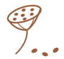
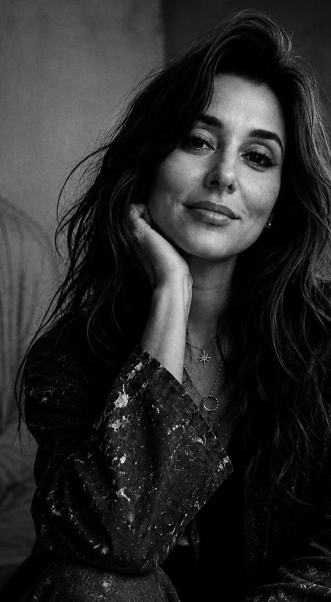

Падма
Кандидата в руководители до вас видит не только рекрутер. Финальное интервью проводит психолог — основатель бюро Виктория Головнёва.
«Мы выбираем людей не только по компетенциям, которые в резюме».
Ведём поиск одни: исполнителя, критерии и условия закрепляем до старта. Так мы можем выделить команду и время на исследование рынка.
Цена — от доли годового фиксированного дохода кандидата до НДФЛ. Предоплата засчитывается в гонорар.
Одна гарантийная замена входит в стоимость — на условиях договора.